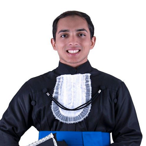

Gallery
Equipe
Conheça um pouco mais das pessoas que fazem o GAMMA.
Professores

Bolsistas de Iniciação Científica

 Felipe Mendes
Felipe Mendes
Otimização do processo de remoção de nitrogênio e carga orgânica
com base no Anaerobic Digestion Model 1 (ADM1).
Ícaro Bernardes
Análise das causas determinantes da geração de resíduos e perdas de bolsa de sangue na cadeia de sangue e hemocomponentes.

 Igor Colombo
Igor Colombo
Análise das causas determinantes da geração de resíduos e perdas de bolsa de sangue na cadeia de sangue e hemocomponentes.
 Lorena Monteiro
Lorena Monteiro
Análise das causas determinantes da geração de resíduos e perdas de bolsa de sangue na cadeia de sangue e hemocomponentes.
 Breno Calazans
Breno Calazans
Análise das causas determinantes da geração de resíduos e perdas de bolsa de sangue na cadeia de sangue e hemocomponentes.

Mestrandos


José Oduque
Avaliação de incertezas associadas aos estudos de ACV: Proposta de orientação nos estudos de ACV considerando a melhor representação das incertezas associas a estimativas e dados.
Doutorandos


Alunos em Trabalho de Conclusão de Curso

Vicente Barbosa
Desenvolvimento de um analisador virtual através de PLS e VIP para estimativa da concentração dos contaminantes MAPD em um reator Trickle-Bed.


Colaboradores e Voluntários